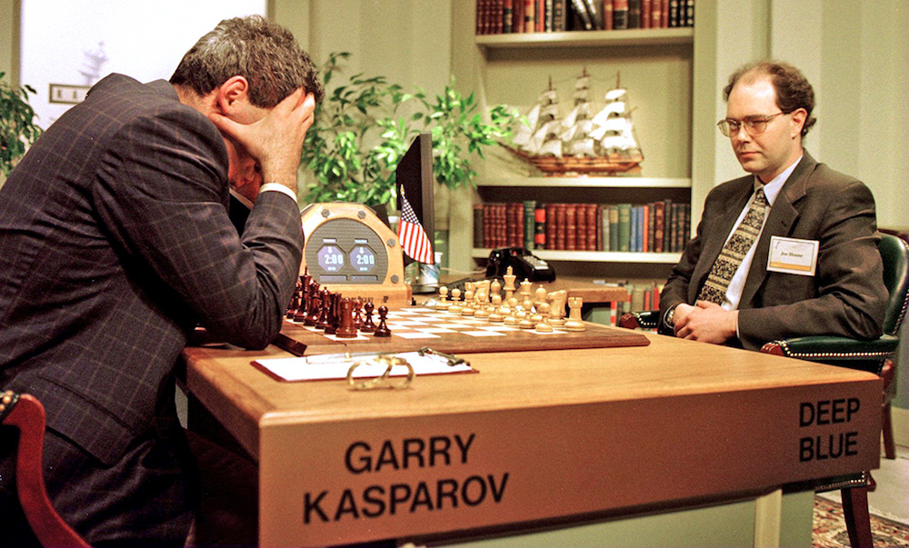
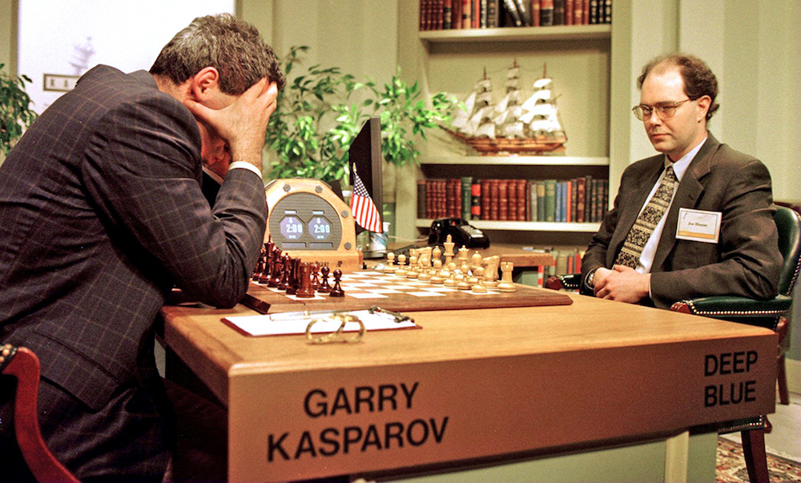

Welcome to the World of Artificial Intelligence
Introduction to Artificial Intelligence
Artificial Intelligence (AI) represents the simulation of human intelligence in machines programmed to think and learn like humans. It encompasses a wide spectrum of technologies and methodologies aimed at enabling machines to perform tasks that typically require human intelligence, such as decision-making, problem-solving, natural language understanding, and visual perception.

Types of Artificial Intelligence
Weak AI (Narrow AI)
Weak AI, also known as Narrow AI, is designed to handle specific tasks within a limited domain of expertise. It operates with predefined parameters and can excel in its designated area without possessing general human-like intelligence.
- Example: Virtual assistants (Siri, Alexa), facial recognition systems, and recommendation algorithms (Netflix,Youtube).

Strong AI (General AI)
Strong AI aims to exhibit human-like intelligence and reasoning across a wide range of tasks. It is capable of learning, understanding, and applying knowledge to solve problems in diverse domains, potentially surpassing human cognitive abilities.
- Example: Theoretical at present; research focuses on developing systems capable of human-level cognitive tasks across various domains.
Quick History of Artificial Intelligence
History of Artificial Intelligence: Key Dates and Names
Artificial Intelligence has a rich history dating back to the mid-20th century, marked by significant milestones, breakthroughs, and key figures who shaped its development.
- 1956: Dartmouth Conference marks the birth of AI as a field.
- 1960s-1970s: Early AI research focuses on symbolic reasoning and expert systems.
- 1980s-1990s: Neural networks and machine learning gain prominence.
- 2000s-Present: Big data fuels advancements in deep learning and AI applications.
 

Exploring the Depths: Deep Learning vs. Machine Learning
Machine Learning (ML)
Machine Learning is a subset of AI that focuses on developing algorithms and statistical models that allow computers to perform tasks without explicit programming. It enables systems to learn from data and improve performance over time.
- Example: Email spam filters, recommendation systems (Amazon,Instagram), predictive analytics in finance.


Deep Learning
Deep Learning is a specialized subset of Machine Learning inspired by the structure and function of the human brain's neural networks. It uses layers of algorithms known as artificial neural networks to process data and learn patterns, making it particularly effective in tasks such as image and speech recognition.
- Example: Image and speech recognition (Google Photos, Siri,Alexa), autonomous vehicles (Tesla Autopilot), medical diagnostics

The Rise of Generative Models
Generative Models in AI
Generative models are a class of AI models designed to generate new data instances that resemble the training data. They can create new content, images, text, or audio based on patterns learned from existing datasets.
- Example: Generative Adversarial Networks (GANs) used in creating realistic images (e.g., This Person Does Not Exist), text generation (OpenAI's GPT models), and music composition

Applications of Artificial Intelligence in the Real World
Artificial Intelligence Applications
AI technologies are transforming various industries and everyday life through innovative applications that enhance efficiency, decision-making, and user experience.
- Natural Language Processing (NLP): Language translation (Google Translate), sentiment analysis.
- Computer Vision: Autonomous vehicles (Waymo), medical image analysis (MRI diagnostics).
- Robotics: Manufacturing robots (Fanuc), social robots (Pepper).